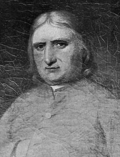
George Fox1624–1691 · QuakerBegan the Quaker movement, 1652.LutheranReformers and movements · no single succession
ReformedReformers and movements · no single succession
Free churchesAnabaptist, Baptist, Quaker, Methodist, Pentecostal
1st–15th c.
16th c.
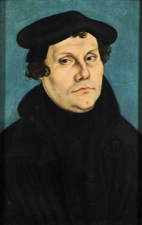
Martin Luther1483–1546 · LutheranPosted the Ninety-five Theses, 1517.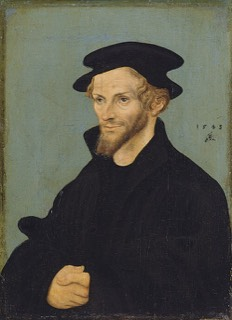
Philipp Melanchthon1497–1560 · LutheranDrafted the Augsburg Confession, 1530.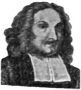
Laurentius Petri1499–1573 · LutheranFirst Lutheran Archbishop of Uppsala.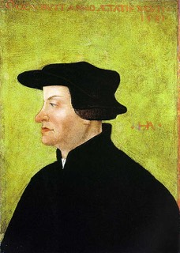
Huldrych Zwingli1484–1531 · ReformedLed the Reformation in Zurich.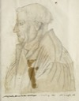
Martin Bucer1491–1551 · ReformedLed reform in Strasbourg.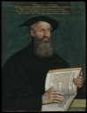
Heinrich Bullinger1504–1575 · ReformedSucceeded Zwingli in Zurich, 1531.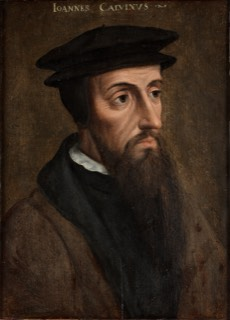
John Calvin1509–1564 · ReformedWrote the Institutes, 1536.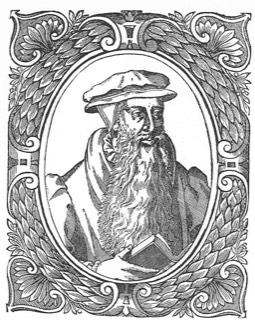
John Knoxc. 1514–1572 · PresbyterianLed the Scottish Reformation, 1560.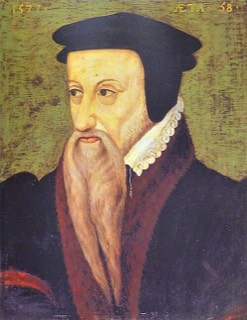
Theodore Beza1519–1605 · ReformedSucceeded Calvin in Geneva, 1564.18th c.
19th c.
20th c.
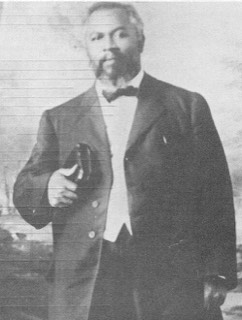
William J. Seymour1870–1922 · PentecostalLed the Azusa Street Revival, 1906.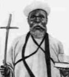
William Wadé Harrisc. 1860–1929 · EvangelicalPreached across West Africa, 1913.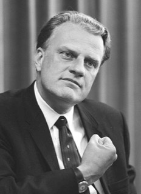
Billy Graham1918–2018 · EvangelicalPreached to millions on six continents.Martin Luther King Jr.1929–1968 · BaptistLed the US civil rights movement.21st c.